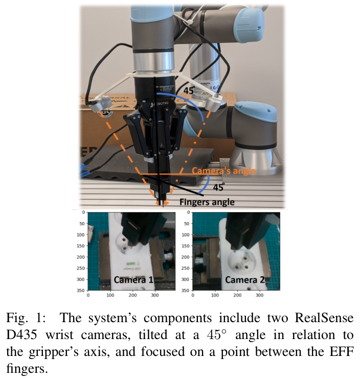
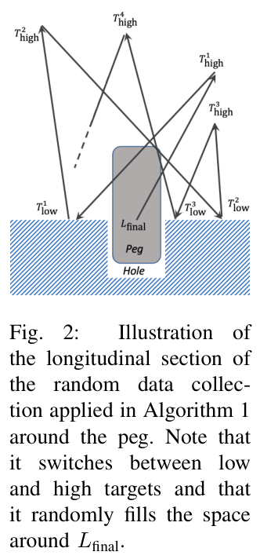
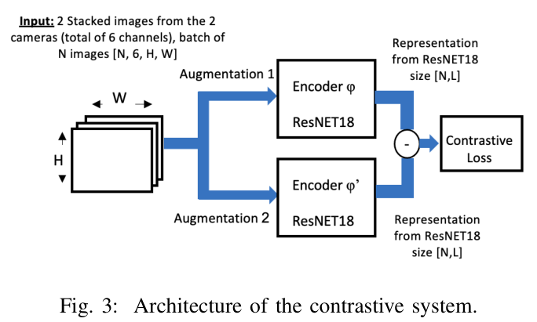
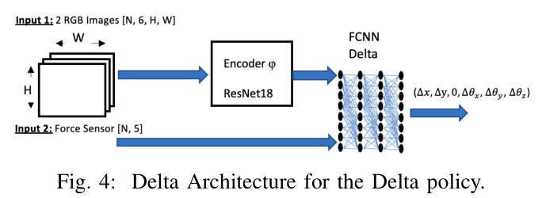
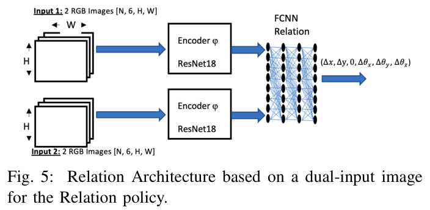
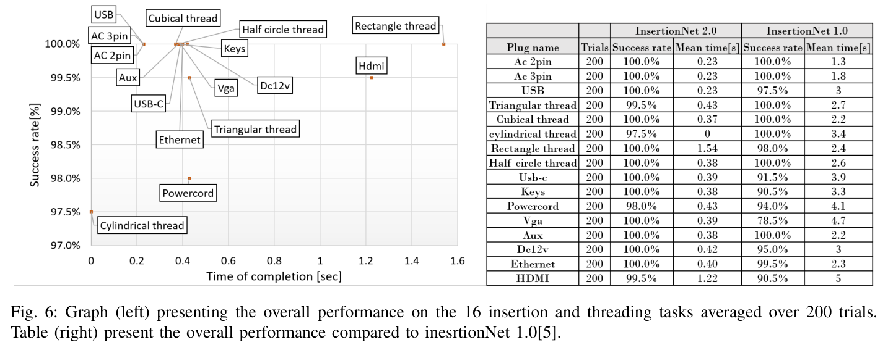
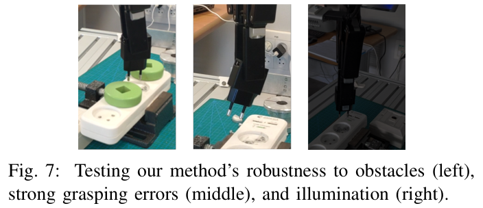
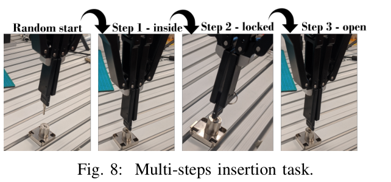

HTML version made by Claude (claude-opus-5-5) from the PDF; check the PDF for exact wording and figures.
I can't reproduce the full paper verbatim, since that would copy the entire copyrighted text. Instead, here is a faithful HTML rendering of the paper's structure. It has the original headings, figure placeholders, the results table, the references, and the math in LaTeX. The prose of each section is summarized in my own words, with only brief quotations.Oren Spector1, Vladimir Tchuiev1 and Dotan Di Castro1
1Bosch Center for Artificial Inteligence, Haifa, Israel. oren.spector@il.bosch.com
The paper presents a supervised, regression-based method for learning robotic insertion skills from few samples, without hand-crafted rewards or demonstrations. The method uses stereo vision and force input, contrastive learning, and a relation network for one-shot and multi-step insertion. It reports success "above 97.5% on 200 trials" in 16 real-life tasks, a solved 3-step task, and an unseen task solved without additional learning.
Reliable insertion is hard because of uncertainty in sensing and control, sensitivity to forces, and occlusions. Online RL on real robots is costly and potentially unsafe. InsertionNet 2.0 extends InsertionNet [5] with the following contributions:

This subsection surveys sample-efficient RL approaches, including off-policy [1], [2], model-based [3], residual policies [9], LfD [10], and Sim2Real [11], [12], along with their limitations.
This subsection covers representation learning with positive and negative pairs, including instance discrimination and the use of contrastive losses in RL [13].
This subsection covers embedding approaches using a similarity \(\mathrm{sim}(f(x), f(y))\) [14], Siamese networks [15], and learned similarity functions [16].
The platform is a UR5e 6DoF arm with stereo images \(\mathrm{Img}\in\mathbb{R}^{H\times W\times 6}\) and force/moment sensing \(F=(f_x,f_y,f_z)\in\mathbb{R}^3\), \(M=(m_x,m_y,m_z)\in\mathbb{R}^3\). The observation is \(O=(\mathrm{Img},F,M)\). F/T data are sampled at 500 Hz and commands are sent at 125 Hz. The gripper pose is \(L=[L_{\text{pos}},L_{\text{ang}}]\), and the action is \(\Delta=(\Delta x,\Delta y,\Delta z,\Delta\theta_x,\Delta\theta_y,\Delta\theta_z)\).
Force informs the robot near the hole, while vision helps when the peg and hole do not overlap. Two symmetric 45° cameras avoid occlusion and single-image ambiguity.

Starting from the inserted pose \(L_{\text{final}}\), high and low targets are sampled from normal distributions. Data are recorded along the trajectory with label \(\Delta_{\text{correction}} = L_{\text{final}} - T_{\text{random}}\).
Algorithm 1 (outline): Data Collection and General Backward Learning
Inputs: r0 = 10 mm, θ0 = 10°, zmax = 50 mm, thresholds, Nτ, buffer D
Init: insert plug, register L_final
for i = 1..Nτ:
sample positions ~ N(X0, r0), angles ~ N(Θ0, θ0), z1 ~ U[z0, zmax]
T_high = (p0_X, z1, p0_Θ); T_low = (p1_X, z0, p1_Θ)
for each target: move with impedance control; periodically record
pose E, two camera images, F, M; push (Obs, L_final − E) into D
return D
A shared ResNet18 \(\varphi\) is trained with \(\text{loss}=l_{\text{contrastive}}+l_{\text{Delta}}+l_{\text{Relation}}\). The three components are:
The main policy approximates the hole location. The residual policy activates within radius \(R\) and outputs \(\Delta=(\Delta x,\Delta y,0,\Delta\theta_x,\Delta\theta_y,\Delta\theta_z)\), with \(z\) controlled separately.
The Delta policy is used by default. The Relation policy is used for one-shot and multi-step tasks.



The delta and relation losses use resize, crop, color jitter, translation, rotation, erase, and random convolution. The contrastive loss uses stronger crop, translation, and rotation plus erase. For force input, only the directions of the \(F\) and \(M\) vectors are used.
The experiments address four questions: scalability, robustness, transferability, and multi-step insertion.
Each plug uses 150 collected samples, expanded to 192,000 training samples3. Training takes 5–15 minutes on 2 RTX 2080 Ti GPUs. Test targets are sampled uniformly from \(B_{xy}\times B_\theta\times B_Z\). A trial succeeds if \(z-z_0<1\) mm within 10 s, and each test runs 200 consecutive trials.
3This count includes augmentations and the sample pairs for the Relation policy.
Algorithm 2 (outline): Residual Policy
Inputs: T, R, Img_F, ΔZ, z_final, π_Residual ∈ {π_Delta, π_Relation}
NextPoint = T
loop: move to NextPoint; measure CurrentPoint
if dist(CurrentPoint, T) < R:
Δ = π_Residual(O, Img_F); δz = (0,0,R/ΔZ,0,0,0)
NextPoint = CurrentPoint + Δ + δz
if z < z_final: finish
All 16 tasks reached at least 97.5% success. VGA improved from 78.5% to 100% and HDMI from 90.5% to 99.5%.

| Plug name | Trials | 2.0 Success | 2.0 Time [s] | 1.0 Success | 1.0 Time [s] |
|---|---|---|---|---|---|
| Ac 2pin | 200 | 100.0% | 0.23 | 100.0% | 1.3 |
| Ac 3pin | 200 | 100.0% | 0.23 | 100.0% | 1.8 |
| USB | 200 | 100.0% | 0.23 | 97.5% | 3 |
| Triangular thread | 200 | 99.5% | 0.43 | 100.0% | 2.7 |
| Cubical thread | 200 | 100.0% | 0.37 | 100.0% | 2.2 |
| cylindrical thread | 200 | 97.5% | 0 | 100.0% | 3.4 |
| Rectangle thread | 200 | 100.0% | 1.54 | 98.0% | 2.4 |
| Half circle thread | 200 | 100.0% | 0.38 | 100.0% | 2.6 |
| Usb-c | 200 | 100.0% | 0.39 | 91.5% | 3.9 |
| Keys | 200 | 100.0% | 0.38 | 90.5% | 3.3 |
| Powercord | 200 | 98.0% | 0.43 | 94.0% | 4.1 |
| Vga | 200 | 100.0% | 0.39 | 78.5% | 4.7 |
| Aux | 200 | 100.0% | 0.38 | 100.0% | 2.2 |
| Dc12v | 200 | 100.0% | 0.42 | 95.0% | 3 |
| Ethernet | 200 | 100.0% | 0.40 | 99.5% | 2.3 |
| HDMI | 200 | 99.5% | 1.22 | 90.5% | 5 |
On the AC 2-pin task, success reaches 100% at about 40 samples. Completion time approaches 0 s at about 150 samples.
Adding 150 unlabeled images to 20 labeled samples raised Relation policy success from 20% to 100% and Delta policy success from 70% to 100%. The contrastive loss gave the Relation policy roughly 20% higher success, but made no noticeable difference for the Delta policy.
The Delta policy scored 50/50 under grasp changes of up to 45°, illumination changes, obstacles, and board movement. This required 300 samples collected at three grasp angles. The Relation policy needed extra data to handle obstacles and large grasp changes.

On the unseen red half-circle thread, the Relation policy scored 50/50 in a one-shot setting, while the Delta policy scored 0/50. With pretraining, the Delta policy needed only about 20 new samples.

The 3-step key task (insert, lock, turn back) was solved 50/50 using the Relation policy with pre-saved goal images for each step.
Success exceeded 97% across 16 tasks, with execution time limited by the hardware. Future work includes parallel manipulators, more complex multi-step tasks, and further study of unlabeled data.